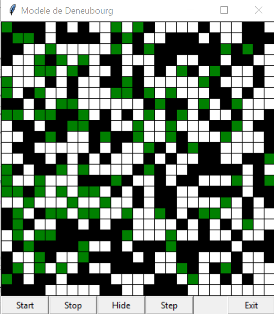

Dans le premier elles sont vivantes.
Dans le second cas elles sont mortes.
Dans le dernier cas elles sont vivantes mais elles portent une fourmi morte.

In some ants species, the workers seem to have a very strange habit with their dead fellows. Indeed, the workers pick them up on their back and drop them in several small stacks that will join into one huge stack over time . This website is based on a college group project of four students in which we try to implement this phenomenon with Python. With this goal in mind, we have used Numpy to define a matrix in order to represent the ground which the ants walk on. Further on, this matrix will be use in Tkinter in order to make a grid composed of cells (related to the coefficients in the matrix). Each coefficient of the matrix is an integer between 0 and 3 that represent the current state of the cell.
Dans le cadre de notre ARE nous avons choisi de porter notre étude sur le comportement des fourmis. Plus particulièrement nous allons nous intéresser à la manière dont les fourmis agrègent leur cadavre. En effet on constate que dans la nature les fourmis ont tendance à réunir leur cadavre en vastes tas réguliers dans l'espace. Ce phénomène est observable à l'intérieur ou à l'extérieur des fourmilières (dans le cas des fourmilières, une pièce de la fourmilière est spécialement dédiée au rassemblement des cadavres de fourmis).
Après le décès d’une fourmi celle-ci dégage une substance chimique. Cette substance une fois libéree dans l’air attire les autres fourmis. Celles-ci on alors une réaction qu’on peut qualifier de mécanique. En effet une fois que ce signal chimique est émis dans l’air une fourmi aux alentours se saisit du cadavre afin de l’emmener directement sur un tas qui peut s’apparenter à nos cimetières. C’est à ce phénomène que nous allons nous intéresser dans notre étude. Les images suivantes illustrent parfaitement le phénomène.

Ainsi nous avons décidé de modéliser ce phénomène et de d'implémenter notre modélisation en utilisant le langage Python. Pour aboutir à des résultats intéressants, nous avons décidé de présenter plusieurs modèles ayant chacun leur avantage et leur inconvénient et de les confronter entre eux.
Dans tous les cas nos fourmis peuvent être dans trois états distincts:
Dans le premier elles sont vivantes.
Dans le second cas elles sont mortes.
Dans le dernier cas elles sont vivantes mais elles portent une fourmi morte.
Ce modèle propose de modéliser le comportement des fourmis. Ainsi ce modèle prend en compte différentes conditions. On suppose tout d’abord que les fourmis n’ont pas de mémoire ainsi elles peuvent transporter plusieurs fois le même corps et elle le dépose dès qu’elle détecte la présence d’un autre corps dans les environs. La fourmi ne prend en compte que la présence d'autres fourmis dans son voisinage afin de prendre une décision donc aucune probabilité n'est définie. De plus dans ce modèle la fourmi à la possibilité de se déplacer dans 8 directions de manière aléatoire néanmoins la fourmi ne peut pas marcher sur un obstacle, ainsi elle ne peut pas marcher sur une fourmi morte ou vivante.
Néanmoins dans ce modèle on constate que les fourmis ont du mal à former des tas de cadavres et qu’elles peuvent se retrouver coincées entre des corps ce qui pose problème dans le programme.
Nous avons implémenté un second modèle afin de pouvoir comparer l'efficacité des différents modèles. Ce modèle s'inspire d'un modèle déjà existant : le modèle de Deneubourg. Toutefois, nous avons décidé de simplifier son fonctionnement pour pouvoir l'implémenter avec Python.
Dans le modèle de Deneubourg original, chaque fourmi dispose d'une mémoire M. Cette mémoire permet d'influencer la probabilité qu'a une fourmi vivante de déposer ou prendre un corps. Nous avons décider de supprimer cette mémoire. Les probabilité ne seront influencées que par le voisinage de la fourmi. On définit alors deux constantes k1 et k2 .
La probabilité Pp qu'a une fourmi vivante de prendre un corps qu'elle croise est alors 0 si le nombre de fourmi morte voisine du corps est plus grand que k1 sinon elle vaut 1.
La probabilité Pd qu'a une fourmi porteuse de déposer un corps qu'elle porte est alors 1 si le nombre de fourmi morte voisine du corps est plus grand que k2 sinon elle vaut 0.
Le modèle de Deneubourg simplifié respecte les règles suivantes :
Tout d’abord nous allons comparer les deux modèles que nous avons implémenté au début de la simulation.
Pour notre première approche on constate cette évolution de système :
On peut donc aisément constater qu’au bout de plusieurs minutes aucun tas ne s’est formé mais qu’il y en encore plusieurs bien distincts. On peut également noter grâce à la courbe que le nombre de tas a une fluctuation assez importante. Ainsi on peut donc en déduire qu’il faut introduire de nouveau critère afin de faire évoluer notre modèle et rendre la formation de tas plus optimale.
C’est la raison pour laquelle nous avons fait le choix d’implémenter le second modèle.
Dans ce second modèle on constate cette évolution :

On peut donc constater qu’un tas se forme rapidement et qu’il est assez compact donc on peut en déduire que l’introduction des probabilités permet de former un tas plus compact, comme le montre cette courbe :
Ainsi le deuxième modèle se rapproche plus de la réalité. En effet le premier modèle ne prend en compte en aucune façon le fait que les fourmis ont une intelligence alors que le deuxième modèle prend en compte en partie ce phénomène. Ainsi on peut en conclure que le deuxième modèle est plus proche de la réalité et qu’il forme également des tas plus rapidement. Ainsi dans la suite de notre étude nous allons nous concentrer sur le second modèle.
1er cas :
On constate que lorsque la probabilité de déposer ou de prendre un corps correspond à ces courbes :
Ou autrement dit lorsque qu’une fourmi morte n’a aucun voisin elle sera déplacée vers une autre case la fourmi vivante déposera les fourmis mortes lorsqu’elle trouvera au moins une autre fourmi morte.
En laissant tourner 4 minutes (soit la moyenne qu’il faut pour former un tas avec des probabilités optimales) on constate ce résultat :
On constate donc que l’on est loin d’avoir formé un seul et unique tas comme on peut le constater sur cette courbe qui vise à compter le nombre de tas :
2ème cas : formation d'un tas unique
Lorsque l’on prend un autre cas où cette fois ci lorsque qu’une fourmi morte a moins de 4 voisins elle sera déplacée vers une autre case. La fourmi vivante déposera les fourmis mortes lorsqu’elle trouvera plus de 4 autres fourmis mortes.
3ème cas : plus de morts que de vivants
Nous avons voulu montrer par la suite l’impact de la population de fourmis vivantes sur la formation de tas nous avons ainsi lancé notre système avec 20 fourmis vivantes pour 400 fourmis mortes. Concernant les probabilités nous avons choisi le cas ou si une fourmi morte possède moins de 4 voisins elle est ramassé par une fourmi vivante et elle sera déposée sur une case ayant au moins 4 voisins.
On constate au bout de 4 minutes l’état final suivant :
On peut donc voir sur la courbe du nombre de tas que l’on arrive pas à avoir un seul tas unique. En effet on peut noter que les fourmis semblent avoir du mal a déplacer les fourmis et donc à former un tas.
4ème cas : beaucoup de vivants et peu de morts
Dans le cas inverse que celui montré précédemment, on peut constater quelques différences. En effet dans l’autre cas, on constate que des tas parvenaient à se former alors que dans le cas étudié, on ne constate aucun tas.
La courbe représentant le nombre de tas vient corroborer le propos ci-dessus :
5ème cas : autant de vivants que de morts
On a étudié par la suite le cas où il y a autant de fourmis vivantes que de fourmis mortes. On peut donc constater qu’aucun tas ne se forme. En effet les fourmis vivantes ne déposent jamais les fourmis mortes.